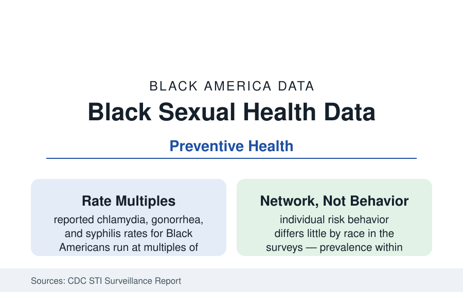

Black Public Health
Sexual Health in Black America: The STI Data and the Prevention Ledger
Sexually transmitted infection rates run highest among Black Americans — a network and access phenomenon the CDC data describe precisely. The surveillance profile.

The sexually transmitted infection data carry the starkest rate multiples in this section: reported chlamydia, gonorrhea, and syphilis rates for Black Americans run at five-to-tenfold the white rates in the CDC's annual surveillance. They also carry the section's most important analytic correction — the CDC's own finding that individual risk behavior does not explain the gap. This article reports the sexual health data.
The Surveillance Numbers
The annual STI Surveillance Report's tables are exact: chlamydia (the most reported infection in America) at roughly five to six times the white rate among Black women and men in recent editions; gonorrhea at seven to nine times; primary and secondary syphilis — resurgent nationally for a decade — at three to five times, with the congenital syphilis catastrophe (babies born with syphilis, stillbirths included) concentrated in the same geography and rising at the rates the maternal profile flagged; HPV's prevalence high across all groups with the cervical-cancer sequelae distributing by the screening file; herpes (HSV-2) seroprevalence in the NHANES data running about double the white rate among Black adults — the background prevalence that makes the network arithmetic of the next section inescapable. The age concentration is the data's spine: the 15-to-24 cohort carries the majority of reported infections, and the Black youth rates are where the multiples peak.
The Network Explanation: The CDC's Own Analysis
The surveillance agency's published reasoning deserves its prominence here: the behavioral surveys (the Youth Risk Behavior and adult health surveys) find Black Americans report comparable or lower numbers of partners, comparable condom use at last intercourse (higher among Black adolescents in several editions), and later or comparable sexual debut against the national pattern — and yet the infection rates run at multiples. The resolution is network prevalence: in a population where background prevalence is higher (for the historical and access reasons the section documents), the same behavior carries a higher probability of encountering an infection at each partnership — the disparity reproduces itself arithmetically through assortative mixing (partnerships form within communities) without any behavioral difference at all. Layered on the arithmetic: the access file (screening and treatment delays lengthen infectious windows — the clinic deserts, the uninsured young men's care gap of the men's profile), the disruption file (partner network churn from housing instability and household disruption — treated here only as the epidemiologists model it, a network-stability variable), and congenital syphilis's specific chain (prenatal care's missed screens — the maternal file's most preventable tragedy, curable with penicillin at every stage).
The Care System and Its Sites
The service infrastructure is specific: the CDC-funded STD clinics (a shrinking network in the public health budgets' data), Planned Parenthood and the Title X family planning system (the screening volume for young Black women runs substantially through these doors), the FQHCs' integrated screening, school-based health centers' adolescent services, and the pharmacy and telehealth entrants (at-home test kits' market growth in the consumer data). The treatment-adherence and partner-services machinery (expedited partner therapy's legal map — the prescription-for-the-partner statutes varying by state) and the re-screening rates (the three-month retest the guidelines prescribe and the claims data show missed) complete the care ledger. The prevention technology file is active: the HPV vaccine's coverage data (Black adolescents' initiation rates now comparable in the recent NIS-Teen — a genuine equity success in the making, its completion series lagging modestly), PrEP (in the HIV profile), and the doxy-PEP guidance (post-exposure doxycycline for bacterial STI prevention — the CDC's 2024 guideline, its uptake data just beginning).
Congenital Syphilis: The Sentinel Failure
One series in the file functions as the system's smoke alarm. Congenital syphilis cases nationally multiplied roughly tenfold across the past decade in the CDC's counts — every case a prenatal system that had three trimesters to catch a curable infection — and the cases concentrate among Black and Latina mothers in the South and West at shares far above their birth shares. The case reviews' findings are uniform: no prenatal care, late care, a positive test untreated or treated late, a reinfection untested — the access file's failures stacked in a single pregnancy. The state responses (mandated third-trimester rescreening in the high-incidence states, emergency-department and facility-intake screening programs, the syphilis field-delivered therapy pilots) post their first bend-the-curve data in the most recent surveillance — the file's one encouraging recent series, and the measure of how preventable the whole ledger is.
Reading the Sexual Health Data
The sexual health file is the network mathematics of inequality stated in bacteria: prevalence pooled by history and access, behavior nearly equal, outcomes at multiples. It refutes, with the CDC's own arithmetic, the lazy reading of disparities as conduct — and it prices the fix in clinic hours and prenatal screens, the cheapest line items in this entire reference.
More in Black Public Health
Hypertension Among Black Adults: Prevalence, Control, and Consequences
About 55 percent of Black adults have hypertension — the highest rate of any U.S. group. Prevalence, onset, control, and the stroke, heart, and kidney consequences in the data.
Diabetes Among Black Adults: Prevalence and Complications
Nearly one in five Black adults has diabetes, diagnosed or undiagnosed — and its complications fall with particular weight. The CDC data on prevalence, control, and outcomes.
Black Life Expectancy: The Gap at Birth and Its Causes
Black life expectancy at birth is about 73 years, roughly five years below the national figure — the summary measure of every health gap in this section. The CDC data.
Source: Centers for Disease Control and Prevention, Sexually Transmitted Infections Surveillance; National Health and Nutrition Examination Survey; Planned Parenthood and Guttmacher Institute service data.